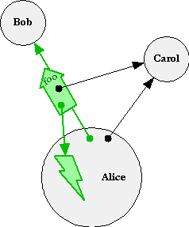
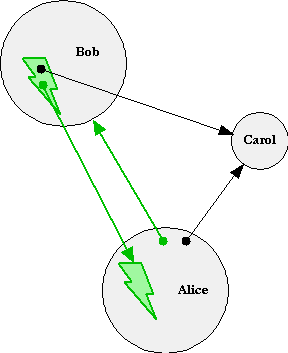
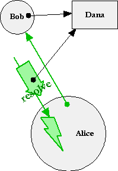
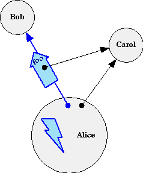

| |
Message Passing |
||||||
Taxonomy of Messaging Primitives
E has the following six message passing primitives,
- The synchronous immediate (".") call (*)
- The synchronous outcome, which has three sub-cases
- The asynchronous eventual ("<-") send,
where an outcome report
- is not expected -- the sendOnly.
- may be expected -- the pipelined-send (*)
For all of these, a message is conveyed to an individual recipient, and contains at least a verb (a String) and a list of arguments. A message often represents a request (identified by the verb and the number of arguments, but not their types), so the recipient generally knows why it is receiving new authority. This facilitates the programming of non-confusable deputies. For the cases marked with (*), the message additionally contains an implicit continuation -- the object to which the outcome of performing the request should be reported.
E computation only occurs within a stack-frame -- shown as a lightning bolt within an object. A stack-frame happens when an object receives an immediate call or eventual send (sendOnly or pipelined-send).
Recall that an object is an instance of a behavior-description (an object-expression in E, or a class in most other object languages). An instance combines a behavior description with the state from its instantiating context (in E, the scope in which the object expression was evaluated). Similarly, a stack-frame can be seen as an instance of the method or matcher corresponding to the received message, and combines the described behavior with state as well. The stack-frame's state is the object's state plus the state resulting from matching the incoming message with the head of the method or matcher. During its execution, a stack-frame can accumulate more state by defining new variables.
Since all computation happens only within stack-frames, all messages are emitted only from stack-frames. When object-granularity analysis suffices, as it often does for security reasoning, we often skip illustrating the stack-frames, as in the Granovetter Diagram.
i) The Immediate Call
The above diagram and the following code illustrates Alice synchronously calling Bob:
def alice {
to doSomething() {
def result := bob.foo(carol)
... # stuff after call
}
}
The call is only allowed if the reference to the recipient is NEAR. Otherwise, the attempt to call instead throws an appropriate exception.
Besides the components shared by all messages, a synchronous call contains an additional special argument -- the continuation -- that points at the caller's stack-frame. The call also turns the calling stack-frame from active to suspended. Computation in fact occurs only in active stack-frames. A suspended stack-frame must be pointed to by exactly one special continuation argument. An active stack-frame is not pointed at. There can be at most one active stack-frame in a Vat, and all stack-frames are in a linear chain between it and a top stack-frame -- a stack-frame directly spawned to service an eventual send. (When between turns, there are no stack-frames, as happens when the queue is empty, or when a Vat is sitting on disk waiting to be revived from checkpoint.)
The message passed in a call need not be allocated as a separate object, as no time passes between departing from the caller and arriving at the callee. Rather, the act of calling simultaneously creates the receiving stack-frame in the callee. All stack-frames contain the special continuation argument from the message they received, but -- unlike the other arguments received from the message -- the continuation is not explicitly accessible to the program. (Like the denotational semantics, and unlike Actors or Scheme, continuations are reified only in our model of E, but not to a callee written in E. They are only for expository purposes.)
See also the Kernel-E Call Expression.
ii) Synchronous Outcome of Stack-Frame Completion
The callee can use the continuation only by completing the execution of its stack-frame, thereby also causing it to be discarded. The nature of this completion implicitly passes an outcome message to the continuation. Unlike calls and pipelined-sends, an outcome message has no hidden continuation argument. There are three kinds of outcome, each represented with its own outcome message. When the continuation is a stack-frame, ie, when the invoker is an immediate-caller, these outcome messages are also only for expository purposes, as neither the caller nor callee can deal with them explicitly. We choose to describe these as messages so we can understand all transfer of authority and control in terms of the Granovetter diagram.
- Success,
corresponding to "falling off the end" and represented by passing a
"resolve(result)" message to the continuation. The diagram
and the following code illustrate Bob returning Dana as a successful
result to Alice:
def bob { to foo(carol) { ... # whatever dana } }In this case, the call expression with which Alice called Bob evaluates to this result, and the stack-frame in Alice suspended on this call expression continues from this point, binding Alice's "result" variable to Dana.
-
Failure, as a result of execution of a "throw(problem)" and represented by passing a "smash(problem)" message to the continuation. The following code:
def bob { to foo(carol) { ... # whatever throw(dana) ... # whatever } }can be illustrated with the same diagram, but the verb is now "smash" instead of "resolve". Execution within Alice's stack-frame now skips to the closest enclosing try-catch or try-finally expression. If these are none, then Alice's stack-frame completes in failure as well, and the smash(problem) message gets forwarded to Alice's stack-frame's continuation.
-
Escape. Invoking an enabled ejector causes the current continuation to be called with an "eject(ejector, value)" message. An ejector is created in an enabled state at the beginning of an escape expression, and disabled on exit from its creating escape expression. (This limited lifetime means it has only dynamic extent.) Each escape expression creates a stack-frame continuation which recognizes its own ejector. Except for this self-recognition, an eject/2 message just causes unwinding as it's forwarded along.
Since only an enabled ejector can cause an eject/2 message to be passed to the continuation, such a message will only be sent to a stack-frame continuation whose creating escape expression is still live on that stack.
Both Failure and Escape are forms of non-local exit.
Other than by invoking its continuation, the callee cannot stop executing, even on I/O. I/O operations that would normally block are instead handled by requesting notification be delivered -- by sending -- to a designated object. As a result, E is strongly deadlock-free (but is still subject to live-lock by infinite loops).
iii) The Eventual Send
There are two forms of eventual send, written the same way, but distinguished by whether the value of send expression appears to be needed.
-
sendOnly. When a send expression appears in a context where it is statically apparent that the value of the send expression will be unused, such as to the left of a semi-colon:
bob <- foo(carol); ...
then the message is a pure one-way message containing only the verb ("foo") and a list of the explicit arguments ([carol]), just as shown in the basic Granovetter diagram. The only feedback Alice can get from the performance of the message is that which she explicitly arranges for. When Bob finishes processing the message, he reports the outcome of the turn to no one.
-
The pipelined send. When a send expression appears in a context where static analysis does not rule out that the value may be used, such as on the right side of a def:
def promise := bob <- foo(carol);
 then,
like the immediate call, the message additionally contains a continuation.
As with the call, when Bob finishes processing the message, the outcome
is reported to the continuation. Unlike a call, the continuation is
not a stack-frame but the Resolver
of a promise. This is the arrowhead with the gray halo shown in continuation-position
in the message. Since the outcome to be reported is the outcome of
an eventual send, it is the outcome of a top-level stack-frame,
which is to say, the outcome of a turn as a whole.
then,
like the immediate call, the message additionally contains a continuation.
As with the call, when Bob finishes processing the message, the outcome
is reported to the continuation. Unlike a call, the continuation is
not a stack-frame but the Resolver
of a promise. This is the arrowhead with the gray halo shown in continuation-position
in the message. Since the outcome to be reported is the outcome of
an eventual send, it is the outcome of a top-level stack-frame,
which is to say, the outcome of a turn as a whole.
Turning Control-Flow into Semi-Data-Flow
Since Ejectors are only dynamic in extent -- they only remain valid until their spawning escape expression completes -- the outcome of a turn cannot be an escape, only success or failure. Therefore, the Resolver only needs to respond to "resolve(result)" and "smash(problem)". In the first case, the promise becomes equivalent to result. In the second, the promise becomes broken, and problem is reported as the reason.
Assume that brokenRef is a reference broken with problem. Note that a stack-frame as continuation reacts differently to "resolve(brokenRef)" and "smash(problem)" -- the first causes successful evaluation to brokenRef while the second causes exceptional flow of control. On the other hand, A Resolver reacts to these two messages identically. As a result, Alice cannot distinguish between these two ways Bob may have reported a problematic outcome.
All messages sent on a reference arrow move towards the arrowhead in order to eventually be delivered to the object the reference designates. Messages sent on an unresolved promise do likewise, but wait behind the unbound arrowhead until the promise is resolved. Once the promise is resolved, all messages sent on the promise may now be delivered to this resolution. In the control-flow programming we started with the caller waits for the recipient to be determined. By contrast, with semi-data-flow programming -- the message, not the sender, waits for the recipient to be determined.
(We call this semi-data-flow to distinguish it from conventional data flow. In conventional data flow, a message would not be delivered until the recipient and all its arguments were resolved. This cannot be reconciled with E's partial ordering constraints, and is undesirable on other grounds as well. On those occasions where it is desired, it may easily be programmed in E. See the promiseAllDone (*** link needed) pattern.)
Turning Semi-Data-Flow back into Control-Flow
In our story so far, there is a puzzling contagion of eventual-ness. Once you have a reference that might be eventual, you must send rather than call on it; and when you do so, you get back another eventual reference as a promise for the result. The Layers of When explains how we can arrange for immediate control flow when a reference becomes fulfilled or broken.
Unless stated otherwise, all text on this page which is either unattributed or by Mark S. Miller is hereby placed in the public domain.
| |
|
report bug (including invalid html)
|
||||||||